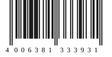
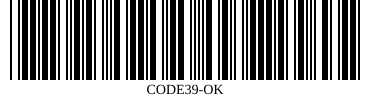

Scanner
<o-scanner> reads QR codes and 1D barcodes from a live camera — using the
browser's native BarcodeDetector where available, and a from-scratch pure-JS decoder everywhere
else — or from an uploaded/dropped image, with no camera at all. Every match fires an o-scan event
with the decoded text, format and detection points.
Basic
Call start() to request the camera (a user gesture is required by most browsers). Point it at
any code from the QR or barcode pages — or on a device
without a camera, use the upload button in the toolbar.
States
The host reflects its state as data-state: idle (not started, or stopped) →
starting (camera permission requested) → scanning (frames are being analysed) →
result (a code was just found — a brief green-outline flash, then back to scanning, or
to idle in single-shot mode). If the camera cannot be used, the state is unsupported
(no getUserMedia, or an insecure — non-HTTPS/localhost — context) or denied (the user
declined the permission prompt); the status bar shows a plain-language reason either way. The eval tests for
this page mock navigator.mediaDevices.getUserMedia to exercise all of these without real hardware
— see tests/evals/codes-scanner.js.
Scanning a file, without a camera
The upload button in the toolbar (and dropping a file onto the stage) calls decodeFile(file),
which never touches the camera. It accepts a File, Blob, <img> or
ImageData — the same source types Orion.scanner.decodeImage() accepts. Try dropping
one of the fixture images below onto the scanner, or use its own upload button.
Fixtures (drag one onto the scanner above):


No camera at all: the source property
For automated tests (and this exact demo — the page you're reading may not have a camera either) set
source to a MediaStream-like object (anything with getTracks() — a real
camera stream, or a fixture stream from canvas.captureStream()) or directly to a live
<video>/<canvas>/ImageBitmap. start() then pulls
frames from it instead of calling getUserMedia — everything else (continuous scanning, the result
flash, torch/switch-camera staying hidden since there is no real device) behaves the same. This demo feeds in
a plain <canvas> (redrawn with a fresh QR code every couple of seconds) directly as
source — a MediaStream from canvas.captureStream() works the same way,
one step removed.
Continuous vs. single-shot
By default <o-scanner> stops itself after the first match (single-shot — typical for a
"scan one item" flow). Add continuous to keep scanning after each hit (a 2.5s cooldown per
exact text+format avoids re-firing on the same code every frame); formats narrows detection to
specific symbologies for both speed and to avoid cross-format false reads.
<o-scanner></o-scanner> <!-- single-shot, any format --> <o-scanner continuous></o-scanner> <!-- keeps scanning --> <o-scanner formats="qr_code"></o-scanner> <!-- QR only --> <o-scanner formats="ean13,upca,code128"></o-scanner> <!-- retail barcodes only -->
Torch, zoom & camera switch
torch reflects the flashlight state once a track reports { torch: true } in its
capabilities (most laptop/desktop webcams do not — the button stays hidden). When more than one camera is
available, a switch button cycles through them; add camera-select to show a dropdown of named
devices instead of cycling.
Orion.scanner.open()
A one-line modal picker: opens <o-scanner> in a floating dialog and resolves with the
first result (or null if closed without a match).
JavaScript API
Orion.scanner.decodeImage(source, { formats }) -> Promise<[{ text, format, points }]>
// source: File | Blob | HTMLImageElement | HTMLVideoElement | HTMLCanvasElement | ImageData | ImageBitmap
Orion.scanner.open({ formats, title }) -> Promise<{ text, format, points } | null>
Orion.scanner.formats // -> the full supported-format list
API
| Attribute | Type | Description |
|---|---|---|
| formats | array (JSON or comma list) | Symbologies to detect; default is every format below. Values: qr_code ean13 ean8 upca code128 code128a code128b code128c code39 itf itf14 codabar. |
| continuous | boolean | Keep scanning after a match instead of stopping (reflected). |
| beep / vibrate | boolean | Feedback on a match (WebAudio beep / navigator.vibrate). |
| torch | boolean | Current flashlight state (reflected); the button is hidden when unsupported. |
| camera-select | boolean | Show a device <select> instead of a cycle button when there are 2+ cameras. |
| region | boolean | Show the corner-bracket scan frame overlay (default on). |
| source | property only | A MediaStream-like (getTracks()) or a <video>/<canvas>/ImageBitmap to pull frames from instead of the camera — see above. |
Events
| Event | Detail | Description |
|---|---|---|
| o-scan | { text, format, points } | A code was decoded (camera, source or file). points is an array of [x, y] corners in source-pixel space. |
| o-start | {} | The camera/source started and the scan loop is running. |
| o-error | { error } | Permission denied, no camera, insecure context, a bad source, or a file with no recognizable code. |
Methods
| Member | Description |
|---|---|
| start() / stop() | Start (camera or source) / stop scanning and release the camera. |
| switchCamera() | Next camera, or flips facingMode user/environment on a single-camera device. |
| toggleTorch() | Toggles the flashlight when the active track supports it. |
| decodeFile(file) | Decode a still File/Blob/image without the camera; fires o-scan/o-error the same as a live match. |
Keyboard
| Key | Action |
|---|---|
| Tab | Moves through the toolbar controls (switch camera / device select / torch / upload) in DOM order — each is a plain, independently-focusable button or select. |
| Enter / Space | Activates the focused button (native <button> behaviour). |
| ↑ / ↓ (device select) | Change the selected camera (native <select> behaviour); fires a restart. |
Accessibility
The status text is an aria-live="polite" region, so state changes ("Starting camera…", "Camera
access is required to scan.") are announced without moving focus. Every toolbar control has an
aria-label (icon-only buttons: switch camera, toggle flashlight, upload an image). The live
<video> is aria-hidden — it is a visual aid, not content; the result itself is
only ever delivered through the o-scan event.
Limitations
- The pure-JS QR decoder fits a single global homography from the 3 finder patterns plus the nearest
alignment pattern; very high versions (~30+) at low pixel density (well under ~5px/module) can occasionally
fail where a piecewise/per-alignment-pattern decoder would still succeed. Prefer the native
BarcodeDetector(used automatically when the browser supports it) or a higher-resolution capture for those. - 1D decoding samples 20 evenly-spaced horizontal scanlines (both directions); a barcode tilted more than a few degrees from horizontal, or scanned so close only a few bars are visible, may need reframing.
toggleTorch()/zoom controls depend entirely on what the active camera'sMediaStreamTrackreports — most laptop webcams support neither.